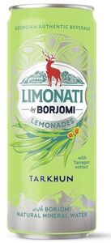

Trade Mark Journal No.2025/027 4 July 2025
WO0000001849095 (32)
Office of origin: Kazakhstan

A three-dimensional trademark represents a naturalistic image of a cylindrical package (jar) with original color and graphic brand elements, name and logo applied to it. On the side surface of the package (jar), just above the middle, on a white oval background, there is a corporate logo of a stylized silhouette of a deer made in red against a background of blue-green mountains and the company name "BORJOMI". Below are a stylized image of flowers and leaves of tarragon (lat. Artemisia dracunculus), and at the very bottom of the side surface of the packaging (jar) there is a stylized silhouette of gray mountains. The side surface of the packaging is made primarily of a combination of many gray (silver), green and white color areas of different sizes and shapes, arranged haphazardly.
3 Dimensional
The mark contains the colours green, yellow, gray, silver, dark green, red, yellow-green, light gray, light green, gray-green, black-blue, emerald green, apple green, pale gray, pale green, green-blue and green and shades.
- Class 32
- Non-alcoholic beverages; non-alcoholic fruit juice beverages; soft drinks; waters [beverages]; mineral water [beverages].
IDS Borjomi Beverages Co.N.V.
Representative: Balgabekova Gulmira Murzagulovna, Abylai Khan Avenue 33, Office 3, 050004 Almaty, KAZAKHSTAN